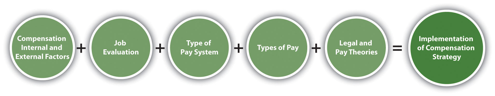
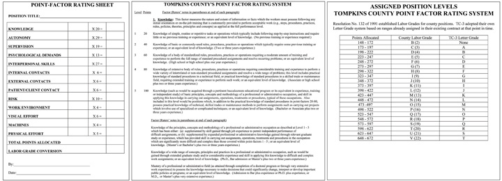
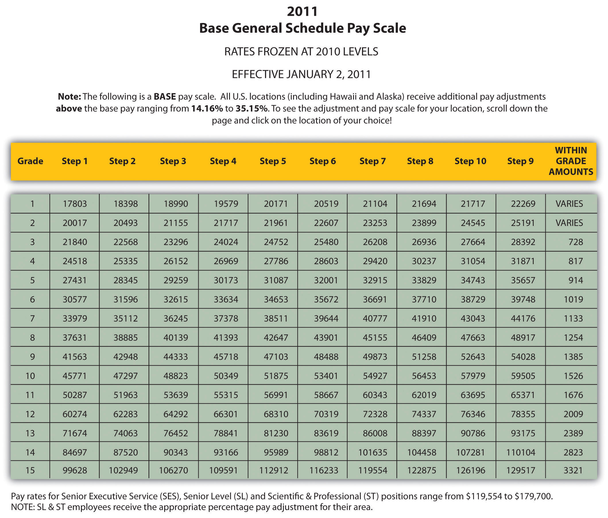
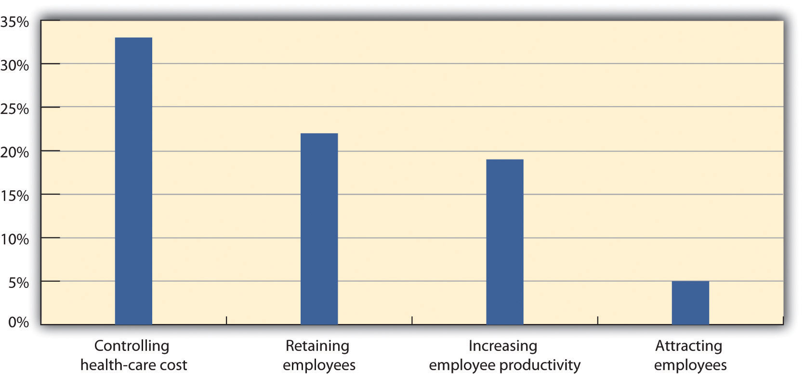
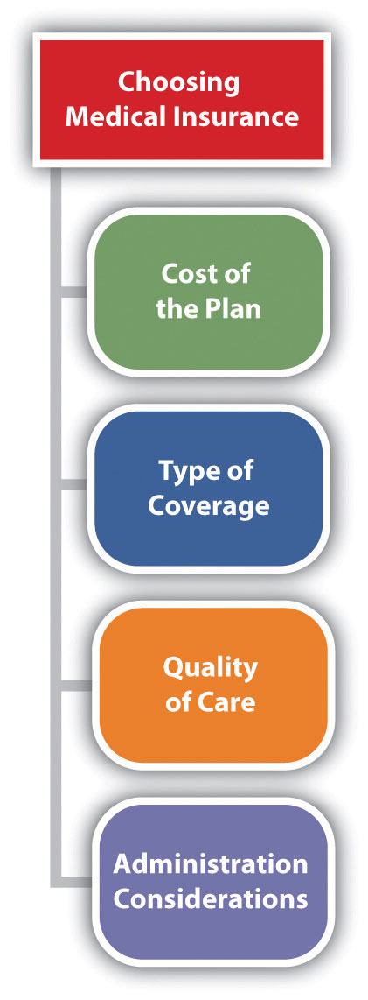
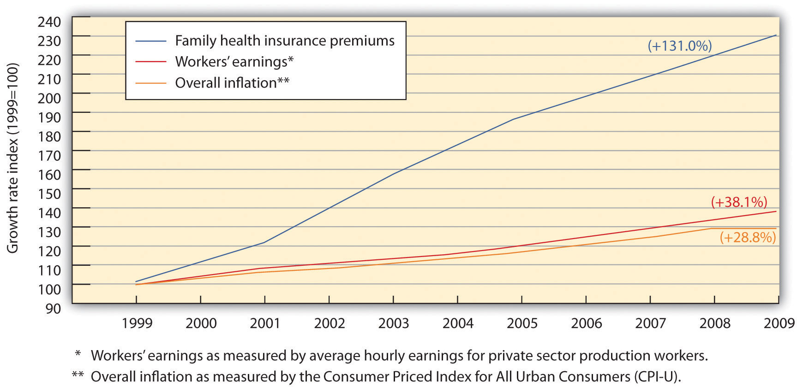

As you sit down to review the compensation package your company offers, one thing that stands out is that your compensation package no longer matches the core values of your organization. When your organization merged five years ago with a similar firm that specializes in online shoe retailing, your company had to hire hundreds of people to keep up with growth. As a result—and what happens with many companies—the compensation plans are not revised and revisited as they should be. The core values your company adopted from the merging company focused on customer service, freedom to work where employees felt they could be most productive, and continuing education of employees, whether or not the education was related to the organization. The compensation package, providing the basic salary, health benefits, and 401(k) plans, seems a bit old-fashioned for the type of company yours has become.
After reviewing your company’s strategic plan and your human resource management (HRM) strategic plan, you begin to develop a compensation plan that includes salary, health benefits, and 401(k) plans, but you feel it might be smart to better meet the needs of your employees by making some changes to these existing plans. For example, you are considering implementing a team bonus program for high customer service ratings and coverage for alternative forms of medicine, such as acupuncture and massage. Instead of guessing what employees would like to see in their compensation packages, you decide to develop a compensation survey to assess what benefits are most important to your employees. As you begin this task, you know it will be a lot of work, but it’s important to the continued recruitment, retention, and motivation of your current employees.
The author introduces the chapter on compensation and benefits.
So far, we have discussed the process for strategic plan development and the recruitment and selection process. The next aspect of HRM is to develop compensation plans that will help in the recruitment and retention of employees. This is the topic of this chapter.
Most of us, no matter how much we like our jobs, would not do them without a compensation package. When we think of compensation, often we think of only our paycheck, but compensation in terms of HRM is much broader. A compensation packageIncludes all aspects of how employees are rewarded for their work, such as pay, benefits, bonuses, and 401(k) plans. can include pay, health-care benefits, and other benefits such as 401(k) plans, which will all be discussed in this chapter. Before we discuss specifics, you should be aware of courses and certifications that can be earned through the WorldatWork Society of Certified Professionals, specifically related to compensation (other certifications will be discussed in their respective chapters).
WorldatWork offers several certifications in the area of compensation:
These certifications involve taking a multiple-choice exam online or at one of the WorldatWork testing locations. The exams test for knowledge, experience, and skills in each of the compensation certification areas and can be a valuable asset to you when applying for HR positions.
The certifications are based on many of the aspects of this chapter, including understanding the goals of compensation packages for employees, which is our focus for this section.
First, the compensation package should be positive enough to attract the best people for the job. An organization that does not pay as well as others within the same industry will likely not be able to attract the best candidates, resulting in a poorer overall company performance.
Once the best employees and talent come to work for your organization, you want the compensation to be competitive enough to motivate people to stay with your organization. Although we know that compensation packages are not the only thing that motivates people, compensation is a key component. We discuss other motivations in Chapter 10 "Managing Employee Performance".
Third, compensation can be used to improve morale, motivation, and satisfaction among employees. If employees are not satisfied, this can result not only in higher turnover but also in poor quality of work for those employees who do stay. A proper compensation plan can also increase loyalty in the organization.
Pay systems can also be used to reward individual or team performance and encourage employees to work at their own peak performance. In fact, in the 2011 list of the Best Companies to Work For by Fortune magazine, all the companies who topped the list (SAS and Boston Consulting Group, for example) had satisfied employees—not only with their pay, but their entire benefits package.“100 Best Companies to Work For,” CNN Money, accessed February 11, 2011, http://money.cnn.com/magazines/fortune/bestcompanies/2011/snapshots/1.html?iid=EL.
With an appropriate pay system, companies find that customer service is better because employees are happier. In addition, having fairly compensated, motivated employees not only adds to the bottom line of the organization but also facilitates organizational growth and expansion. Motivated employees can also save the company money indirectly, by not taking sick days when the employee isn’t really sick, and companies with good pay packages find fewer disability claims as well.
So far, our focus on HRM has been a strategic focus, and the same should be true for development of compensation packages. Before the package is developed for employees, it’s key to understand the role compensation plays in the bottom line of the organization. For example, in 2010, the US military spent 22 percent of its budget on personnel salaries.US Department of Defense, Financial Summary Tables, May 2009, accessed February 11, 2011, http://comptroller.defense.gov/defbudget/fy2010/fy2010_summary_tables_whole.pdf. One-fifth of the total budget—or more—is not uncommon for most US organizations, depending on the industry. As a result, it is easy to see why the compensation plan should be an important aspect of the overall HRM strategic plan. The next few sections will detail the aspects of creating the right compensation packages: for your organization, including legal considerations.
If you have had or currently have a job, do you feel the compensation plan motivated you? Why or why not?
There are a few basic aspects of compensation packages we should discuss before moving into the specific aspects of compensation. These foundations can assist in the development of a compensation strategy that meets the goals of your organization and is in line with your strategic plan.
Before beginning work on your compensation packages, some analysis should be done to determine your organization’s philosophy in regard to compensation. Before development of your compensation philosophies, there are some basic questions to address on your current compensation packages.
Once these basic questions are addressed, we can see where we might have “holes” in our compensation package and begin to develop new philosophies in line with our strategic plan, which benefits the organization. Some possible compensation policies might include the following:
Let’s discuss some internal and external factors in determining compensation in more detail.
One major internal factor is the compensation strategy the company has decided to use. Sixty-two percent of organizations have a written, documented compensation policy.Dow Scott, “Survey of Compensation Policies and Practices,” WorldatWork, accessed July 23, 2011, http://www.worldatwork.org/waw/research/html/comppol03.html.
Some organizations choose a market compensation policy, market plus, or market minus philosophy. A market compensation policyA compensation policy that pays similar to what the market offers. is to pay the going rate for a particular job, within a particular market based on research and salary studies. The organization that uses a market plus philosophy will determine the going rate and add a percentage to that rate, such as 5 percent. So if a particular job category median pays $57,000, the organization with a market plus of 5 percent philosophy will pay $59,850. A market minus philosophy pays a particular percentage less than the market; so in our example, if a company pays 5 percent less, the same job would pay $54,150. The University of Arizona, for example, posts its compensation philosophy on its website:University of Arizona, “Compensation Philosophy,” accessed July 23, 2011, http://www.hr.arizona.edu/compensation_philosophy.
In order to fulfill its mission, the University of Arizona shall maintain a compensation program directed toward attracting, retaining, and rewarding a qualified and diverse workforce. Within the boundaries of financial feasibility, employee compensation shall be externally competitive and internally equitable, and shall be based upon performance as recognized within the work unit.
In addition to their compensation philosophy, the university lists compensation objectives, such as “average salaries will be targeted at the average salary levels of employees in comparable positions in our various labor markets.” This is an example of a market compensation policy.
An example of an organization with a market plus philosophyA compensation policy that determines the going rate and adds a percentage to the market rate, so pay is higher than the market. is Cisco Systems, listed as one of the top-paying companies on Fortune’s annual list.“Top 25 Paying Companies,” Fortune, accessed July 23, 2011, http://money.cnn.com/galleries/2011/pf/jobs/1101/gallery.best_companies_top_paying.fortune/14.html. For example, they pay $131,716 for software engineers, while at Yahoo! software engineers are paid an average of $101,669, using a market philosophy. The pay at Cisco reflects its compensation philosophy and objectives:
Cisco operates in the extremely competitive and rapidly changing high-technology industry. The Board's Compensation Committee believes that the compensation programs for the executive officers should be designed to attract, motivate, and retain talented executives responsible for the success of Cisco and should be determined within a framework based on the achievement of designated financial targets, individual contribution, customer satisfaction, and financial performance relative to that of Cisco's competitors. Within this overall philosophy, the Compensation Committee's objectives are to do the following:
An example of an organization with a market minus philosophyA compensation policy that determines the going rate and subtracts a particular percentage, so pay is less than the market. is Whole Foods. The executive compensation for Whole Foods is a maximum of nineteen times the average store worker (or $608,000), very low by Fortune 500 executive pay standards, which average 343 times.Ted Allen, “AFL-CIO Defends Pay Equality Disclosure Mandate,” ISS (blog), July 19, 2011, accessed July 23, 2011, http://blog.riskmetrics.com/gov/2011/07/afl-cio-defends-pay-equity-disclosure-mandate-1.html. According to John Mackey, Whole Foods CEO, paying on a market minus philosophy makes good business sense: “Fewer things harm an organization’s morale more than great disparities in compensation. When a workplace is perceived as unfair and greedy, it begins to destroy the social fabric of the organization.”Susanna Hamner and Tom McNichol, “Ripping Up the Rules of Management,” CNN Money, n.d., accessed July 23, 2011, http://money.cnn.com/galleries/2007/biz2/0705/gallery.contrarians.biz2/3.html. Another example of an organization with a market minus philosophy is Southwest Airlines. Despite the lower pay (and more hours), the organization boasts just a 1.4 percent turnover rate, which can be attributed not to pay but to the workplace culture and, as a result, loyalty to the company.Kelly Eggers, “Why It’s OK to Be Paid Less,” Fins Technology, n.d., accessed July 23, 2011, http://it-jobs.fins.com/Articles/SB130816636352923783/Why-It-s-Okay -to-Get-Paid-Less.
There are many reasons why an organization would choose one philosophy over another. A market minus philosophy may tie into the company’s core values, as in Whole Foods, or it may be because the types of jobs require an unskilled workforce that may be easier and less expensive to replace. A company may use a market plus philosophy because the industry’s cutting-edge nature requires the best and the brightest.
Other internal pay factors might include the employer’s ability to pay, the type of industry, and the value of the employee and the particular job to the organization. In addition, the presence of a union can lead to mandated pay scales. Unions are discussed in Chapter 12 "Working with Labor Unions".
External pay factors can include the current economic state. For example, in June 2011, the US unemployment rate was 9.2 percent, which is quite high for the country. As a result of surplus workers, compensation may be reduced within organizations because of oversupply of workers. Inflation and cost of living in a given area can also determine compensation in a given market.
Once an organization has looked at the internal and external forces affecting pay, it can begin to develop a pay system within the organization. We discuss how to develop a pay system in Section 6.3 "Types of Pay Systems".
Once you have determined your compensation strategy based on internal and external factors, you will need to evaluate jobs, develop a pay system, and consider pay theories when making decisions. Next, you will determine the mix of pay you will use, taking into consideration legal implications.
Figure 6.2 The Process for Implementing Compensation Strategy
As mentioned when we discussed internal and external factors, the value of the job is a major factor when determining pay. There are several ways to determine the value of a job through job evaluation. Job evaluationThe process of determining the relative worth of jobs to determine pay structure. is defined as the process of determining the relative worth of jobs to determine pay structure. Job evaluation can help us determine if pay is equitable and fair among our employees. There are several ways to perform a job evaluation. One of the simplest methods, used by smaller companies or within individual departments, is a job ranking system. In this type of evaluation, job titles are listed and ranked in order of importance to the organization. A paired comparisonIndividual jobs are compared with every other job, based on a ranking system, and an overall score is given for each job, determining the highest valued job for pay decisions. can also occur, in which individual jobs are compared with every other job, based on a ranking system, and an overall score is given for each job, determining the highest-valued job to the lowest-valued job. For example, in Table 6.1 "Example of a Paired Comparison for a Job Evaluation", four jobs are compared based on a ranking of 0, 1, or 2. Zero indicates the job is less important than the one being compared, 1 means the job is about the same, and 2 means the job is more important. When the scores are added up, it is a quick way to see which jobs are of more importance to the organization. Of course, any person creating these rankings should be familiar with the duties of all the jobs. While this method may provide reasonably good results because of its simplicity, it doesn’t compare differences between jobs, which may have received the same rank of importance.
Table 6.1 Example of a Paired Comparison for a Job Evaluation
| Job | Receptionist | Project Manager | Account Manager | Sales | Director |
|---|---|---|---|---|---|
| Receptionist | X | 0 | 0 | 0 | 0 = 4th |
| Project Administrative Assistant | 1 | X | 0 | 0 | 1 = 3rd |
| Account Manager | 2 | 1 | X | 0 | 3 = 2nd |
| Sales Director | 2 | 2 | 2 | X | 6 = 1st |
| Based on the paired ranking system, the sales director should have a higher salary than the project administrative assistant, because the ranking for that job is higher. Likewise, a receptionist should be paid less than the project administrative assistant because this job ranks lower. | |||||
In a job classification systemA job evaluation system in which every job is classified and grouped based on the knowledge and skills required for the job, years of experience, and amount of authority for a particular job., every job is classified and grouped based on the knowledge and skills required for the job, years of experience, and amount of authority for that job. The US military is perhaps the best known for this type of classification system. The navy, for example, has job classification codes, such as HM (hospitalman). Then the jobs are divided into specialties, such as HM-8483, the classification for surgical technologist, and HM-8451 for a hospitalman-X-ray technician. The federal government and most state governments use this type of system. Tied to each job are the basic function, characteristics, and typical work of that job classification, along with pay range data. A sample of a job classification system is shown in Table 6.2 "Example of a Job Classification System at the University of Washington".
Table 6.2 Example of a Job Classification System at the University of Washington
| Job Code | Job Title | State Job Class Code Reference | Representative Group | Pay Table | Pay Range | Minimum Mo. Rate | Maximum Mo. Incremental Rate | OT Eligible |
|---|---|---|---|---|---|---|---|---|
| 7715 | ACCELERATOR TECHNICIAN 1 | SEIU Local 925 Clerical Nonsupervisory | B4 | 40 | $2689 | $3583 | Y | |
| 7300 | ACCOUNTANT 1 | SEIU Local 925 Clerical Nonsupervisory | B4 | 40 | $2689 | $3583 | Y | |
| 7301 | ACCOUNTANT 2 | SEIU Local 925 Clerical Nonsupervisory | B4 | 44 | $2949 | $3956 | N | |
| 7302 | ACCOUNTANT, SENIOR | SEIU Local 925 Clerical Nonsupervisory | B4 | 50 | $3410 | $4587 | N | |
| 7011 | ACCOUNTING SUPERVISOR | SEIU Local 925 Clerical Supervisory | B4 | 50 | $3410 | $4587 | N | |
| 7045 | ADMINISTRATIVE ASSISTANT A | SEIU Local 925 Clerical Nonsupervisory | B4 | 39 | $2623 | $3493 | Y | |
| 7044 | ADMINISTRATIVE ASSISTANT A-SUPV | SEIU Local 925 Clerical Supervisory | B4 | 41 | $2751 | $3667 | Y | |
| 7046 | ADMINISTRATIVE ASSISTANT B | SEIU Local 925 Clerical Supervisory | B4 | 42 | $2816 | $3763 | Y | |
| 7080 | ADMINISTRATIVE COORDINATOR | SEIU Local 925 Clerical Nonsupervisory | B4 | 37 | $2506 | $3325 | Y | |
| 7490 | ADMISSIONS SPECIALIST | SEIU Local 925 Clerical Nonsupervisory | B4 | 41 | $2751 | $3667 | Y | |
| 7583 | AFFIRMATIVE ACTION/HUMAN RIGHTS ASST | SEIU Local 925 Clerical Nonsupervisory | B4 | 41 | $2751 | $3667 | Y | |
| 8696 | ALCOHOLISM THERAPIST 1 | WFSE HMC | B0 | 56 | $3507 | $5021 | Y | |
| 6119 | ALCOHOLISM THERAPIST 2 | 359F | Classified Non-Union | C0 | 63 | $3761 | $5224 | Y |
| 6329 | ANATOMIC PATHOLOGY LABORATORY LEAD | 315H | Classified Non-Union | C0 | 73 | $4154 | $5771 | Y |
| 6328 | ANATOMIC PATHOLOGY LABORATORY SUPERVISOR | 315I | Classified Non-Union | C0 | 79 | $4412 | $6126 | N |
| 8146 | ANATOMIC PATHOLOGY TECHNICIAN | SEIU Local 925-HMC Technical | B7 | 55 | $3472 | $4822 | Y | |
| 8326 | ANATOMIC PATHOLOGY TECHNICIAN | SEIU LOCAL 925 Medical/Laboratory Tech | B7 | 55 | $3472 | $4822 | Y | |
| 8145 | ANATOMIC PATHOLOGY TECHNICIAN TRAINEE | SEIU Local 925-HMC Technical | B7 | 40 | $2991 | $4155 | Y | |
| 8325 | ANATOMIC PATHOLOGY TECHNICIAN TRAINEE | SEIU LOCAL 925 Medical/Laboratory Tech | B7 | 40 | $2991 | $4155 | Y | |
| 8147 | ANATOMIC PATHOLOGY TECHNOLOGIST | SEIU Local 925-HMC Technical | B7 | 66 | $3874 | $5383 | Y | |
| 8327 | ANATOMIC PATHOLOGY TECHNOLOGIST | SEIU LOCAL 925 Medical/Laboratory Tech | B7 | 66 | $3874 | $5383 | Y | |
| 6313 | ANESTHESIOLOGY TECHNICAL SERVICES SUPV | 320H | Classified Non-Union | CA | 61 | $3686 | $5277 | N |
| 6310 | ANESTHESIOLOGY TECHNICIAN 1 | 320E | Classified Non-Union | CA | 13 | $2287 | $3271 | Y |
| 8711 | ANESTHESIOLOGY TECHNICIAN 1 | WFSE HMC | BA | 10 | $2219 | $3271 | Y | |
| 8312 | ANESTHESIOLOGY TECHNICIAN 2 | SEIU LOCAL 925 Medical/Laboratory Tech | BS | 46 | $3344 | $4933 | Y | |
| 8960 | ANESTHESIOLOGY TECHNICIAN 2 | 1199NW-HMC Respiratory/Anesthesiology | BS | 46 | $3344 | $4933 | Y | |
| 6311 | ANESTHESIOLOGY TECHNICIAN LEAD | 320G | Classified Non-Union | CA | 52 | $3370 | $4826 | Y |
| 8959 | ANESTHESIOLOGY TECHNICIAN LEAD | 1199NW-HMC Respiratory/Anesthesiology | BS | 53 | $3585 | $5288 | Y | |
| 7724 | ANIMAL TECHNICIAN 1 | SEIU Local 925 Clerical Nonsupervisory | B4 | 25 | $1903 | $2506 | Y | |
| 7725 | ANIMAL TECHNICIAN 2 | SEIU Local 925 Clerical Nonsupervisory | B4 | 26 | $1948 | $2567 | Y | |
| 7726 | ANIMAL TECHNICIAN 3 | SEIU Local 925 Clerical Nonsupervisory | B4 | 30 | $2134 | $2816 | Y | |
| 4727 | ANIMAL TECHNICIAN SUPERVISOR | 525H | Classified Non-Union | C1 | 35 | $2370 | $3063 | Y |
| 4658 | ASSISTANT FACILITIES DESIGNER | 540L | Classified Non-Union | C1 | 48 | $3213 | $4214 | Y |
| 8874 | ASSISTANT STEAM ENGINEER | WFSE Skilled Trades | BL | 46G | $3566 | $4106 | Y | |
| 8507 | BAKER | WFSE Campuswide | BI | 30 | $2113 | $2789 | Y | |
| 8508 | BAKER LEAD | WFSE Campuswide | BI | 33 | $2266 | $2994 | Y | |
| 4700 | BIOMEDICAL ELECTRONICS TECHNICIAN 1 | 511E | Classified Non-Union | CA | 54 | $3438 | $4924 | Y |
| 4701 | BIOMEDICAL ELECTRONICS TECHNICIAN 2 | 511F | Classified Non-Union | CA | 68 | $3954 | $5659 | Y |
| 4702 | BIOMEDICAL ELECTRONICS TECHNICIAN 3 | 511G | Classified Non-Union | CA | 78 | $4368 | $6249 | Y |
| 4703 | BIOMEDICAL ELECTRONICS TECHNICIAN LEAD | 511H | Classified Non-Union | CA | 83 | $4591 | $6568 | Y |
| 4704 | BIOMEDICAL ELECTRONICS TECHNICIAN SUPV | 511I | Classified Non-Union | CA | 88 | $4826 | $6903 | N |
| 8875 | BOILER OPERATOR | WFSE Skilled Trades | BL | 42G | $3247 | $3736 | Y | |
| 7613 | BOOK PRODUCTION COORDINATOR | SEIU Local 925 Clerical Nonsupervisory | B4 | 44 | $2949 | $3956 | Y | |
| 7075 | BOOKKEEPING MACHINE OPERATOR | SEIU Local 925 Clerical Nonsupervisory | B4 | 29 | $2088 | $2751 | Y | |
| 7550 | BROADCAST TECHNICIAN 1 | SEIU Local 925 Clerical Nonsupervisory | B4 | 41 | $2751 | $3667 | Y | |
| 7551 | BROADCAST TECHNICIAN 2 | SEIU Local 925 Clerical Nonsupervisory | B4 | 47 | $3166 | $4255 | Y | |
| 7552 | BROADCAST TECHNICIAN 3 | SEIU Local 925 Clerical Nonsupervisory | B4 | 51 | $3493 | $4699 | Y | |
| 7553 | BROADCAST TECHNICIAN SUPERVISOR | SEIU Local 925 Clerical Supervisory | B4 | 55 | $3856 | $5186 | N | |
| 7335 | BUDGET ANALYST | SEIU Local 925 Clerical Nonsupervisory | B4 | 42 | $2816 | $3763 | Y | |
| 7336 | BUDGET/FISCAL ANALYST | SEIU Local 925 Clerical Nonsupervisory | B4 | 46 | $3093 | $4154 | N | |
| 7337 | BUDGET/FISCAL ANALYST LEAD | SEIU Local 925 Clerical Nonsupervisory | B4 | 51 | $3493 | $4699 | N | |
| 7339 | BUDGET/FISCAL OPERATIONS SUPERVISOR | SEIU Local 925 Clerical Supervisory | B4 | 57 | $4053 | $5448 | N | |
| 7338 | BUDGET/FISCAL UNIT SUPERVISOR | SEIU Local 925 Clerical Supervisory | B4 | 54 | $3763 | $5059 | N | |
| 7021 | BUILDING SERVICES COORDINATOR | SEIU Local 925 Clerical Nonsupervisory | B4 | 33 | $2289 | $3023 | Y | |
| 7022 | BUILDING SERVICES SUPERVISOR | SEIU Local 925 Clerical Supervisory | B4 | 38 | $2567 | $3410 | Y | |
| 5215 | BUILDINGS AND GROUNDS SUPERVISOR A | 598G | Classified Non-Union | C1 | 49 | $3293 | $4322 | N |
| 5216 | BUILDINGS AND GROUNDS SUPERVISOR B | 598H | Classified Non-Union | C1 | 55 | $3819 | $5010 | N |
| 7119 | BUYER 1 | SEIU Local 925 Clerical Nonsupervisory | B4 | 38 | $2567 | $3410 | Y | |
| 7120 | BUYER 2 | SEIU Local 925 Clerical Nonsupervisory | B4 | 44 | $2949 | $3956 | Y | |
| 7122 | BUYER 3 | SEIU Local 925 Clerical Nonsupervisory | B4 | 49 | $3325 | $4472 | N | |
| Source: Reprinted from The University of Washington website, Compensation: A Division of Human Resources, http://www.washington.edu/admin/hr/ocpsp/compensation/alpha.sort.files/alpha.sort.html (accessed September 14, 2011). | ||||||||
Another type of job evaluation system is the point-factor systemA job evaluation system that determines the value of a job by calculating the total points assigned to compensable factors., which determines the value of a job by calculating the total points assigned to it. The points given to a specific job are called compensable factorsThe aspects of a job that are assigned points in a point-factor system.. These can range from leadership ability to specific responsibilities and skills required for the job. Once the compensable factors are determined, each is given a weight compared to the importance of this skill or ability to the organization. When this system is applied to every job in the organization, expected compensable factors for each job are listed, along with corresponding points to determine which jobs have the most relative importance within the organization. Tompkins County in New York uses a point-factor system. Some of their compensable factors include the following:
In this point-factor system, autonomy ranks the highest and is given a weight of twenty-nine, while knowledge is given a rate of twenty, for example. Each of the compensable factors has a narrative that explains how points should be distributed for each factor. In this system, one hundred points are given for knowledge for a bachelor’s degree and two to three years of experience, and eighty points are given if an employee has an associate’s degree or high school diploma and two to three years of experience. The points are then multiplied by the weight (for knowledge, the weight is twenty) to give a final score on that compensable factor. After a score is developed for each, the employee is placed on the appropriate pay level for his or her score, as illustrated in Figure 6.3 "Example of a Point-Factor System".
Figure 6.3 Example of a Point-Factor System
Another option for job evaluation is called the Hay profile methodA proprietary job evaluation method that focuses on three factors called know-how, problem solving, and accountability; this method is most applicable to management positions.. This proprietary job evaluation method focuses on three factors called know-how, problem solving, and accountability. Within these factors are specific statements such as “procedural proficiency.” Each of these statements is given a point value in each category of know-how, problem solving, and accountability. Then job descriptions are reviewed and assigned a set of statements that most accurately reflect the job. The point values for each of the statements are added for each job description, providing a quantitative basis for job evaluation and eventually, compensation. An advantage of this method is its quantitative nature, but a disadvantage is the expense of performing an elaborate job evaluation.
Once you have performed a job evaluation, you can move to the third step, which we call pay gradingThe process of setting the pay scale for specific jobs.. This is the process of setting the pay scale for specific jobs or types of jobs.
The first method to pay grade is to develop a variety of pay grade levelsA compensation model that looks at all jobs within the organization and assigns each job a pay level or pay grade.. Figure 6.4 "Sample Pay Scale for General Federal Jobs" shows an example. Then once the levels are developed, each job is assigned a pay grade. When employees receive raises, their raises stay within the range of their individual pay grade, until they receive a promotion that may result in a higher pay grade. The advantage of this type of system is fairness. Everyone performing the same job is within a given range and there is little room for pay discrimination to occur. However, since the system is rigid, it may not be appropriate for some organizations in hiring the best people. Organizations that operate in several cities might use a pay grade scale, but they may add percentages based on where someone lives. For example, the cost of living in Spokane, Washington, is much lower than in New York City. If an organization has offices in both places, it may choose to add a percentage pay adjustment for people living within a geographic area—for example, 10 percent higher in New York.
One of the downsides to pay grading is the possible lack of motivation for employees to work harder. They know even if they perform tasks outside their job description, their pay level or pay grade will be the same. This can incubate a stagnant environment. Sometimes this system can also create too many levels of hierarchy. For large companies, this may work fine, but smaller, more agile organizations may use other methods to determine pay structure. For example, some organizations have moved to a delayering and bandingSimilar to pay grade levels, but this structure offers more flexibility in that there are fewer pay grades, called bands, which allows for greater flexibility. process, which cuts down the number of pay levels within the organization. General Electric delayered pay grades in the mid-1990s because it found that employees were less likely to take a reassignment that was at a lower pay grade, even though the assignment might have been a good development opportunity.Gerald Ferris, Handbook of Human Resource Management (Cambridge, MA: Blackwell, 1995). So, delayering enables a broader range of pay and more flexibility within each level. Sometimes this type of process also occurs when a company downsizes. Let’s assume a company with five hundred employees has traditionally used a pay grade model but decided to move to a more flexible model. Rather than have, say, thirty pay levels, it may reduce this to five or six levels, with greater salary differentials within the grades themselves. This allows organizations to better reward performance, while still having a basic model for hiring managers to follow.
Figure 6.4 Sample Pay Scale for General Federal Jobs
Rather than use a pay grade scale, some organizations use a going rate modelIn this pay model, analysis of the going rate for a particular job is the basis for determining what people within the organization should be paid.. In this model, analysis of the going rate for a particular job at a particular time is considered when creating the compensation package. This model can work well if market pressures or labor supply-and-demand pressures greatly impact your particular business. For example, if you need to attract the best project managers, but more are already employed (lack of supply)—and most companies are paying $75,000 for this position—you will likely need to pay the same or more, because of labor supply and demand. Many tools are available, such as salarywizard.com, to provide going rate information on particular jobs in every region of the United States.
The president of HR That Works provides some tips on determining compensation.
Another pay model is the management fit modelIn this model, each manager makes a decision about who much a new hire should be paid.. In this model, each manager makes a decision about who should be paid what when that person is hired. The downside to this model may be potential discrimination, halo effects, and resentment within the organization. Of course, these factors can create morale issues, the exact thing we want to avoid when compensating employees.
In addition to the pay level models we just looked at, other considerations might include the following:
You have been working for your organization for five years. After lots of hard work, you are promoted to sales manager. One of your first tasks is to develop goals for your sales team, then create a budget based on these goals. First, you look at the salaries of all the sales staff to find major pay discrepancies. Some salespeople, who perform equally well, are paid much lower than some sales staff whom you consider to be nonperformers. As you dig deeper, you see this is a problem throughout the sales team. You are worried this might affect motivation for your team if they find out what others are making. How would you handle this?
How Would You Handle This?
https://api.wistia.com/v1/medias/1360653/embedThe author discusses the How Would You Handle This situation in this chapter at: https://api.wistia.com/v1/medias/1360653/embed.
Now that we have discussed pay systems, it is important to look at some theories on pay that can be helpful to know when choosing the type of pay system your organization will use.
The equity theoryA theory that says people will evaluate their own compensation by comparing their compensation to others’ compensation. is concerned with the relational satisfaction employees get from pay and inputs they provide to the organization. It says that people will evaluate their own compensation by comparing their compensation to others’ compensation and their inputs to others’ inputs. In other words, people will look at their own compensation packages and at their own inputs (the work performed) and compare that with others. If they perceive this to be unfair, in that another person is paid more but they believe that person is doing less work, motivational issues can occur. For example, people may reduce their own inputs and not work as hard. Employees may also decide to leave the organization as a result of the perceived inequity. In HR, this is an important theory to understand, because even if someone is being paid fairly, they will always compare their own pay to that of others in the organization. The key here is perception, in that the fairness is based entirely on what the employee sees, not what may be the actual reality. Even though HR or management may feel employees are being paid fairly, this may not be the employee’s belief. In HR, we need to look at two factors related to pay equity: external pay equity and internal pay equity. External pay equity refers to what other people in similar organizations are being paid for a similar job. Internal pay equity focuses on employees within the same organization. Within the same organization, employees may look at higher level jobs, lower level jobs, and years with the organization to make their decision on pay equity. Consider Walmart, for example. In 2010, Michael Duke, CEO of Walmart, earned roughly $35 million in salary and other compensation,Alice Gomstyn, “Walmart CEO Pay,” ABC News Money, July 2, 1010, accessed July 23, 2011, http://abcnews.go.com/Business/walmart-ceo-pay-hour-workers-year/story?id=11067470. while employees earned minimum wage or slightly higher in their respective states. While Walmart contends that its wages are competitive in local markets, the retail giant makes no apologies for the pay difference, citing the need for a specialized skill set to be able to be the CEO of a Fortune 500 company. There are hundreds of articles addressing the issue of pay equity between upper level managers and employees of an organization. To make a compensation strategy work, the perceived inputs (the work) and outputs (the pay) need to match fairly.
The expectancy theoryThe expectancy theory says that employees will put in as much work as they expect to receive reward for. is another key theory in relation to pay. The expectancy theory says that employees will put in as much work as they expect to receive. In other words, if the employee perceives they are going to be paid favorably, they will work to achieve the outcomes. If they believe the rewards do not equal the amount of effort, they may not work as hard.
The reinforcement theoryA theory that says that if high performance is followed by some reward, then it is more likely that the desired behavior will occur in the future., developed by Edward L. Thorndike,Indiana University, “Edward L. Thorndike,” accessed February 14, 2011, http://www.indiana.edu/~intell/ethorndike.shtml. says that if high performance is followed by some reward, that desired behavior will likely occur in the future. Likewise, if high performance isn’t followed by a reward, it is less likely the high performance will occur in the future. Consider an extreme example of the reinforcement theory in the world of finance. On Wall Street, bonuses for traders and bankers are a major part of their salary. The average bonus in 2010 was $128,530,Aaron Smith, “The 2010 Wall Street Bonus,” CNN Money, February 24, 2011, accessed July 23, 2011, http://money.cnn.com/2011/02/24/news/economy/wall_street_bonus/index.htm. which does not take into account specific commissions on trades, which can greatly increase total compensation. One interesting consideration is the ethical implications of certain pay structures, particularly commission and bonus plans. For example, after the US government bailed out American International Group (AIG) with $170 billion in 2009, it was reported AIG would still provide some $165 million in bonuses to the same business unit that brought the company to near collapse, because of contractual issues. Traditionally, a bonus structure is designed to reward performance, rather than be a guaranteed part of the compensation plan, as was the case with AIG. Bonus and commission plans should be utilized to drive desired behavior and act as a reward for the desired behavior, as the reinforcement theory states.
All these theories provide us information to make better decisions when developing our own pay systems. Other considerations are discussed next.
Besides the motivational aspect of creating a pay structure, there are some other considerations. First, the size of the organization and the expected expansion of the organization will be a factor. For example, if you are the HR manager for a ten-person company, you likely use a going rate or management fit model. While this is appropriate for your company today, as your organization grows, it may be prudent to develop a more formal pay structure. Ascentium Corporation, based in Seattle, Washington, found this to be the case. When the company started with fewer than fifteen employees, a management fit model was used. As the company ballooned to over five hundred employees in four cities, a pay banding model had to be put into place for fairness.
If your organization also operates overseas, a consideration is how domestic workers will be paid in comparison to the global market. One strategy is to develop a centralized compensation system, which would be one pay system for all employees, regardless of where they live. The downside to this is that the cost of living may be much less in some countries, making the centralized system possibly unfair to employees who live and work in more expensive countries. Another consideration is in what currency employees will be paid. Most US companies pay even their overseas workers in dollars, and not in the local currency where the employee is working. Currency valuation fluctuations could cause challenges in this regard.Bobby Watson, “Global Pay Systems, Compensation in Support of a Multinational Strategy,” Compensation Benefits Review 37, no. 1 (2005): 33–36. We further discuss some global compensation policies in Chapter 14 "International HRM".
How you communicate your pay system is extremely important to enhance the motivation that can be created by fair and equitable wage. In addition, where possible, asking for participation from your employees through the use of pay attitude surveys, for example, can create a transparent compensation process, resulting in higher performing employees.
Organizations should develop market pay surveys and review their wages constantly to ensure the organization is within expected ranges for the industry.
Why do you think a transparent compensation policy is so important to motivating a workforce?
Table 6.3 Types of Pay
| Pay | Attributes |
| Salary | Fixed compensation calculated on a weekly, biweekly, or monthly basis. No extra pay for overtime work. |
| Hourly Wage | Employees are paid on the basis of number of hours worked. |
| Piecework System | Employees are paid based on the number of items that are produced. |
| Types of Incentive Plans | Attributes |
| Commission Plans | An employee may or may not receive a salary but will be paid extra (e.g., a percentage for every sale made). |
| Bonus Plans | Extra pay for meeting or beating some goal previously determined. Bonus plans can consist of monetary compensation, but also other forms such as time off or gift certificates. |
| Profit-Sharing Plans | Annual bonuses paid to employees based on the amount of profit the organization earned. |
| Stock Options | When an employee is given the right to purchase company stock at a particular rate in time. Please note that a stock “option” is different from the actual giving of stock, since the option infers the employee will buy the stock at a set rate, obviously, usually cheaper than the going rate. |
| Other Types of Compensation | Attributes |
| Fringe Benefits | This can include a variety of options. Sick leave, paid vacation time, health club memberships, daycare services. |
| Health Benefits | Most organizations provide health and dental care benefits for employees. In addition, disability and life insurance benefits are offered. |
| 401(k) Plans | Some organizations provide a retirement plan for employees. The company would work with a financial organization to set up the plan so employees can save money, and often, companies will “match” a percentage of what the employee contributes to the plan. |
After a pay system has been developed, we can begin to look at specific methods of paying our employees. Remember that when we talk about compensation, we are referring to not only an actual paycheck but additional types of compensation, such as incentive plans that include bonuses and profit sharing. We can divide our total pay system into three categories: pay, incentives, and other types of compensation. Pay is the hourly, weekly, or monthly salary an employee earns. An incentive, often called a pay-for-performance incentive, is given for meeting certain performance standards, such as meeting sales targets. The advantage to incentive pay is that company goals can be linked directly to employee goals, resulting in higher pay for the employee and goal achievement by the organization. The following are desirable traits of incentive plans:
Table 6.3 "Types of Pay" illustrates the three types of compensation.
Most organizations use a combination of pay, incentives, and other compensation, as outlined in Table 6.3 "Types of Pay", to develop the total compensation package.
As you have already guessed from our earlier chapter discussions, people cannot be discriminated against when it comes to development of pay systems. One issue hotly debated is the issue of comparable worth. Comparable worthStates that people should be given similar pay if they are performing the same type of job. states that people should be given similar pay if they are performing the same type of job. Evidence over the years shows this isn’t the case, with women earning less than men in many industries. On average, a woman earns 79 cents for every $1.00 a man earns. For women of color, the gap is wider at 69 cents for African-American women and 59 cents for Latina women.National Organization for Women, “Facts about Pay Equity,” accessed February 15, 2011, http://www.now.org/issues/economic/factsheet.html. Many publications state that women earn less than men for a few reasons:
While the reasons are certainly debatable, there is evidence that young women (without children) entering the workforce actually earn more than their male counterparts, owing to higher levels of education.Conor Dougherty, “Young Women’s Pay Exceeds Male Peers,” Wall Street Journal, September 1, 2010. As you may remember from Chapter 3 "Diversity and Multiculturalism", the EEOC covers discrimination in the workplace, including pay discrimination based on race, color, religion, sex, and national origin. The Equal Pay ActPassed in 1963, the act makes it illegal to pay different wages to men and women if they perform equal work in the same workplace. of 1963 makes it illegal to pay different wages to men and women if they perform equal work in the same workplace.
More recent legislation on pay includes the Lilly Ledbetter Fair Pay Act of 2009, the first law signed by President Obama. This bill amends the Civil Rights Act stating that the 180-day statute of limitations for filing an equal pay lawsuit regarding pay discrimination resets with each discriminatory paycheck. The bill stemmed from a lawsuit against Goodyear Tire and Rubber Company by Lilly Ledbetter, who claimed that her nineteen-year career at the company consisted of unfair pay, compared to male workers in the organization. Her complaint was time barred by the US Supreme Court, and the new act addressed the time (180 days) constraint in which people have to file claims.
The Fair Labor Standards ActA federal law established in 1938 that sets a minimum wage for jobs and other conditions for pay., or FLSAA federal law established in 1938 that sets a minimum wage for jobs and other conditions for pay., was established in 1938 and set a minimum wage for jobs, overtime laws, and child labor laws. FLSA divides workers into exempt and nonexempt status, and jobs under exempt status do not fall under the FLSA guidelines. An exempt employee is usually paid a salary and includes executive, professional, outside sales, and administrative positions. A nonexempt employee is usually an hourly employee. For nonexempt employees, some states may implement a higher minimum wage than that established by the federal government. For example, in 2011, the minimum wage is $8.67 per hour in Washington State, while the federal minimum wage is $7.25 per hour. Obviously, as an HR manager or manager, it is your responsibility to ensure everyone is being paid the minimum wage. This law also requires overtime pay if employees work over forty hours per week. Organizations must also post the FLSA poster in a visible part of the workplace, outlining these laws.
Child labor also falls under FLSA. The goal of these laws is to protect the education of children, prohibit the employment of children in dangerous jobs, and limit the number of working hours of children during the school year and other times of the year.US Department of Labor, “Child Labor,” accessed February 15, 2011, http://www.dol.gov/whd/childlabor.htm.
According to the FLSA, tipped employees are those earning $30 or more per month in tips, such as servers in a restaurant. Employers whose employees receive more than $30 in tips may consider tips as part of wages, but they also must pay $2.12 an hour in direct wages. They must also be able to show that the employee receives at least the applicable minimum wage. If the tips and direct wage do not meet the minimum wage, the employer must pay the difference.
Also relating to pay is the Federal Unemployment Tax Act (FUTA)FUTA provides for payments of unemployment compensation to workers who have lost their jobs.. FUTA provides for payments of unemployment compensation to workers who have lost their jobs. Most employers pay a federal and a state unemployment tax, and portions of these funds go toward unemployment benefits should the worker lose his or her job. The Federal Employees Compensation Act (FECA)Provides federal employees injured in the performance of their jobs compensation benefits, such as disability. provides federal employees injured in the performance of their jobs compensation benefits, such as disability. Please note that this is elective for private companies but required of federal agencies.
This video provides tips on negotiating salary from the perspective of an employee.
As you already know, there is more to a compensation package than just pay. There are many other aspects to the creation of a good compensation package, including not only pay but incentive pay and other types of compensation. First, we will discuss benefits that are mandated by the federal government, and then we will discuss types of voluntary benefits, including both incentive pay and other types of compensation.
The Social Security Act of 1935 requires employers to withdraw funds from workers’ paychecks to pay for retirement benefits. This is called a payroll tax. Please note that all organizations are legally compelled to offer this benefit. After several revisions, we now call this OASDHIA federally mandated retirement program that stands for Old Age, Survivors, Disability, and Health Insurance Program and includes Social Security and Medicare. or the Old Age, Survivors, Disability, and Health Insurance Program. To be insured, employees must work forty quarters, with a minimum of $1,000 earned per quarter. Once this money is put aside, anyone born after 1960 will receive benefits at 67. The OASDHI tax in 2011 is 4.2 percent on earnings for employees, up to $106,800 and 6.2 percent for the employer up to the same limits. This covers both retirement income as well as medical benefits, called Medicare, once the employee reaches retirement age.
Unemployment insurance is required under the Social Security Act of 1935 and is also called the Federal Unemployment Tax Act (FUTA). This program’s goals include providing some lost income for employees during involuntary unemployment, helping workers find a new job, incentivizing employers to continue employment, and developing worker skills if they are laid off. The majority of this plan is funded by employers’ payroll taxes, which account for .8 percent per employee. The rate is actually 6.2 percent of compensation, but employers are allowed a tax credit for these payments, which results in the net .8 percent. With this benefit, employees receive unemployment benefits and/or job training when they are laid off or let go from a current job. However, employees would be ineligible to receive these benefits if they quit their job, as it must be involuntary. Just like Social Security, this payroll tax on employers is required.
Some employers also offer workers’ compensation benefits. If an employee is hurt on the job, he or she would receive certain benefits, such as a percentage of pay. Jobs are classified into risk levels, and obviously the higher the risk level, the higher the cost of insurance. This is not a federally mandated program, but for some occupations in some states, it may be a requirement.
While the government does not require companies to provide health-care and medical benefits to employees, the Consolidated Omnibus Budget Reconciliation Act (COBRA)A law enacted in 1985 that requires companies to allow employees to extend their group health-care coverage for up to thirty-six months. requires companies to allow employees to extend their group coverage for up to thirty-six months. The restrictions for this plan include the requirement of a qualifying event that would mean a loss of benefits, such as termination or reduction in hours. For example, if an employee works forty hours a week with medical insurance, but the schedule is reduced to twenty hours, no longer qualifying him or her for benefits, COBRA would be an option.
As we discussed earlier, there are several types of incentive pay systems that can be tied directly to business objectives and the employees’ ability to help the company meet those objectives. They include commissions, bonuses, profit sharing, stock options, team pay, and merit pay.
Commissions are usually calculated on the basis of a percentage and earned based on the achievement of specific targets that have been agreed upon by the employee and employer. For example, many salespeople receive commissions from each item sold. Many commission incentive plans require employees to meet a minimum level of sales, who then are paid a comission on each sale beyond the minimum. A straight commission planAn incentive plan in which the employee receives no base pay and the entire pay is based on meeting sales goals. is one in which the employee receives no base pay and entire pay is based on meeting sales goals. Many plans, however, include a base payThe minimum pay an employee receives. and commission for each sale. Base pay is the guaranteed salary the employee earns.
Several types of bonuses can be given to employees as incentive pay. Meeting certain company goals or successfully completing a project or other objectives can be tied to a bonus, which is a one-time payment to an employee. A spot bonus is an unplanned bonus given to an employee for meeting a certain objective. These types of bonuses do not always have to be money; they can be other forms such as a gift certificate or trip. Fifty-eight percent of WorldatWork membersWorldatWork, “Spot Bonus Survey,” July 2000, accessed July 23, 2011, http://www.worldatwork.org/waw/research/html/spotbonus-home.html. said that they provide spot bonuses to employees for special recognition above and beyond work performance.
Some organizations choose to reward employees financially when the organization as a whole performs well, through the use of profit sharing as an incentive. For example, if an organization has a profit-sharing program of 2 percent for employees, the employees would earn 2 percent of the overall profit of the company. As you have guessed, this can be an excellent incentive for employees to both work as a team and also monitor their own personal performance so as not to let down the team. For example, in 2011, US automaker General Motors gave one of its highest profit-sharing payouts ever. Forty-five thousand employees received $189 million in a profit-sharing bonus, which equaled about $4,200 per person.Nick Bunkley, “GM Workers to Get $189 Million in Profit Sharing,” New York Times, February 14, 2011, accessed February 21, 2011, http://www.nytimes.com/2011/02/15/business/15auto.html?_r=2&ref=business. While profit sharing can be a great incentive, it can also be a large expense that should be carefully considered.
Employee ownership of the organization is similar to profit sharing but with a few key differences. In this type of plan, employees are granted stock optionsA type of incentive that allows the employees to buy stock at a fixed price., which allow the employees to buy stock at a fixed price. Then if the stock goes up in value, the employee earns the difference between what he or she paid and the value of the stock. With this type of incentive, employees are encouraged to act in the best interest of the organization. Some plans, called employee stock ownership plansA type of incentive that gives employees stock (ownership) in the organization., are different from stock options, in that in these plans the employee is given stock as reward for performance.
In a smaller organization, team pay or group incentives can be popular. In this type of plan, if the group meets a specified goal, such as the increase of sales by 10 percent, the entire group receives a reward, which can consist of additional pay or bonus. Please note that this is different from individualized bonuses, discussed earlier, since the incentive is a reward for the group as opposed for the individual.
Merit pay is a pay program that links pay to how well the employee performs within the job, and it is normally tied to performance appraisals. Performance appraisals are discussed further in Chapter 10 "Managing Employee Performance". Merit base is normally an annual pay increase tied to performance. The problem with merit pay is that it may only be received once per year, limiting incentive flexibility. To make merit pay work, performance guidelines should be predetermined. Some organizations offer cost of living annual increases (COLAs),A pay increase not tied to merit but given to employees as an annual inflationary increase. which is not tied to merit but is given to employees as an annual inflationary increase.
While the cost of health insurance premiums may be going up for most Americans, these premiums do not hit the individual employee’s pocketbook at Microsoft. Microsoft, based in Redmond, Washington, finds itself once again on the Fortune 500 Best Companies to Work For list in several areas, including paying for 100 percent of employees’ health-care premiums.“100 Best Companies to Work For,” Fortune, accessed July 21, 2011, http://money.cnn.com/magazines/fortune/bestcompanies/2010/snapshots/51.html. In addition to cutting this cost for employees, Microsoft also offers domestic partner benefits, one of the first Fortune 500 companies to do so. In 2005, Microsoft also began to offer partial coverage for transgender surgery to its existing health-care coverage, which earned Microsoft the highest attainable score by the Human Rights Campaign (HRC) Equality Index.Gay, Lesbian, Bisexual, and Transgender Employees at Microsoft (GLEAM), Microsoft website, accessed July 21, 2011, http://www.microsoft.com/about/diversity/en/us/programs/ergen/gleam.aspx. Microsoft also promotes fitness and wellness as part of its health-care plan, providing an on-site fitness center and subsidized gym memberships.
According to the Bureau of Labor Statistics, 62 percent of companies in 2010 offered health-care benefits to employees.Bureau of Labor Statistics, “Employee Benefits Survey,” 2010, accessed July 23, 2011, http://www.bls.gov/ncs/ebs/benefits/2010/ownership/private/table01a.htm. The yearly cost for employee medical insurance averages $9,552, according to the 2009 Towers Perrin survey.Towers Watson, “2009 Health Care Cost Survey Reveals High-Performing Companies Gain Health Dividend,” With such a significant cost to companies, it is up to HR managers to contain these costs, while not negatively affecting employee motivation. Medical insurance usually includes hospital expenses, surgical expenses, and routine health-care visits. Most insurance plans also allow for wellness visits and other alternative care (e.g., massage and acupuncture) within the plans. Many employers also offer vision and dental care benefits as part of their benefits packages. Disability insurance is also provided by some employers as well. We will discuss each of these in detail next.
One important law to keep in mind regarding medical insurance is the Health Insurance Portability and Accountability Act (HIPAA) of 1996. It provides federal protections for personal health information held by covered entities, such as employers. In other words, employers cannot divulge or share health care information they may have on an employee.
Figure 6.6
As you can see from MetLife’s 9th annual study in 2010, cost containment is an important aspect to health-care plans.
Source: MetLife, “9th Annual Study of Employee Benefits Trends,” 2010, http://www.metlife.com/assets/institutional/services/insights-and-tools/ebts/Employee-Benefits-Trends-Study.pdf (accessed July 23, 2011).
As the HR professional, it will likely be your responsibility to choose the health-care plan that best meets the needs of your employees. Some options include the following:
Figure 6.7 Considerations When Choosing Medical Insurance
When choosing the best type of plan for your organization, the following aspects should be considered:
First, the cost is usually a major consideration for the HR professional. Developing a budget for health-care costs, initiating bids from possible providers, and then negotiating those bids is a key factor in controlling this cost for employers.
Second, asking for employees’ opinions about the type of coverage they would prefer is a way to ensure your plan meets the needs of your employees. Next, consider the quality of care your employees will receive and, finally, how simple will the plan be for your HR department to administer. For example, many HMO plans offer fully automated and online services for employees, making them easy to administer.
Disability insuranceA type of insurance that provides income to individuals (usually a portion of their salary) should they be injured or need long-term or short-term care resulting from an illness. provides income to individuals (usually a portion of their salary) should they be injured or need long-term care resulting from an illness. Short-term disability insurance (STD) provides benefits to someone if they are unable to work for six months or less, while long-term disability insurance (LTD) covers the employee for a longer period of time. Normally, disability insurance provides income to the employee that is 60–80 percent of their normal salary.
Figure 6.8
One of the biggest challenges in health-care benefits planning is to manage the growing cost of health insurance premiums for employees while still managing cost containment for the organization.
Source: Economic Policy Institute, “The State of Working America: Health Premiums,” http://stateofworkingamerica.org/charts/growth-rate-of-premiums-earnings-and-inflation/ (accessed July 23, 2011).
As the scenery of the workforce has changed, benefits have changed, too. One such recent change is the movement of employee pension plans to 401(k) plans. While some organizations still offer pension plans, such plans are far more rare. A pension plan is a set dollar amount an employee will receive when they retire from their organization. This type of plan was popular when most people worked their entire life at the same company. However, many pension plans have gone bankrupt, and the United States has an agency to protect people from losing pension benefits. The Pension Benefit Guaranty Corporation (PBGC)A US government agency created by the Employee Retirement Income Security Act (ERISA) to protect pension benefits in private sector pension plans. was created by the Employee Retirement Income Security Act (ERISA) to protect pension benefits in private sector pension plans. If a pension plan ends or isn’t able to pay all benefits, PBGC’s insurance program pays the benefit that should have been provided. Financing for this plan comes from insurance premiums paid by the companies whose plans PBGC protects.
As more mobility in the workplace has occurred, most organizations no longer offer pension plans, but instead, they offer 401(k) plans. While a pension plan can motivate employee loyalty, 401(k) plans are far more popular. According to the US Bureau of Labor Statistics, employer-provided retirement plans, such as 401(k) plans, were available to 74 percent of all full-time workers in the United States,US Bureau of Labor Statistics, “Employee Benefits in the United States: March 2010,” news release, July 27, 2010, accessed September 12, 2011, http://www.bls.gov/ncs/ebs/sp/ebnr0016.txt. while 39 percent of part-time workers had access to retirement benefits.
A 401(k) plan is a plan set up by the organization in which employees directly deposit money from their paycheck. The funds are tax deferred for the employee until retirement. If an employee leaves the job, their 401(k) plan goes with them. As an extra incentive, many organizations offer to match what the employee puts into the plan, usually based on a percentage. For example, an employee can sign up to contribute 5 percent of salary into a 401(k) plan, and the company will contribute the same amount. Most companies require a vesting periodFor 401(k) plans, a certain time period before the employer will match the employee funds contributed.—that is, a certain time period, such as a year, before the employer will match the funds contributed.
Usually, 401(k) plans are easy to administer, after the initial setup has occurred. If the employer is matching employee contributions, the expense of such a plan can be great, but it also increases employee retention. Some considerations when choosing a 401(k) plan are as follows:
It is first important to make sure the vendor you are considering for administration of your 401(k) plan has a positive reputation and also provides ease of access for your employees. For example, most 401(k) plans allow employees to change their address online and move investments from a stock to a bond. Twenty-four-hour access has become the expectation of most employees, and as a result, this is a major consideration before choosing a plan. Most 401(k) plans charge a fee to manage the investments of your employees. The management fees can vary greatly, so receiving a number of bids and comparing these fees is important to ensure your employees are getting the best deal.
It is important to mention the Employee Retirement Income Security Act (ERISA) here, as this relates directly to administration of your 401(k) plan. First, ERISA does not require employers to offer a pension or 401(k) plan, but for those who do, it requires them to meet certain standards when administering this type of plan. Some of these standards include the following:
Time off is a benefit we should address, since this type of benefit varies greatly, especially in other parts of the world. French companies, for example, are mandated by law to provide five weeks of paid vacation time to employees.Rebecca Leung, “France: Less Work, More Time Off,” CBS News, February 11, 2009, accessed July 23, 2011, http://www.cbsnews.com/stories/2005/06/27/60II/main704571.shtml. In the United States, the number of days off provided is a major budget item worth considering. Here are the general types of time off:
Many companies offer a set number of paid holidays, such as New Year’s Day, Memorial Day, Christmas, Independence Day, and Thanksgiving.
The number of sick leave days can vary greatly among employers. The average in the United States is 8.4 paid sick days offered to employees per year.HRM Guide, “Sick Day Entitlement Survey,” accessed February 21, 2011, http://www.hrmguide.com/health/sick-entitlement.htm.
With full-time employment, many organizations also offer paid vacation to employees, and it is generally expected as part of the compensation package. According to a survey performed by Salary.com, the average number of paid vacation days in the United States is nine days for one year of service, fourteen days for five years of service, and seventeen days for ten years of service to the organization.Jessica Yang, “Paid Time Off from Work Survey,” Salary.com, accessed September 15, 2011, http://www.salary.com/Articles/ArticleDetail.asp?part=par088.
Organizations vary greatly in how vacation time is accrued. Some organizations give one hour for a certain number of days worked, while others require a waiting period before earning any paid time off (PTO). In addition, some organizations allow their employees to carry over unused vacation time from one year to the next, while other employees must use their vacation every year or risk losing it.
One option is to provide a set number of days off, which can be used for vacation time, holidays, and/or sick leave.
To promote longevity, some organizations offer paid (or for example, 60 percent of salary paid) sabbaticals. For example, after five years of employment, the employee may take a paid sabbatical for one month.
When creating your compensation plan, of course the ability to recruit and retain should be an important factor. But also, consideration of your workforce needs is crucial to any successful compensation plan. The first step in development of a plan is to ask the employees what they care about. Some employees would rather receive more pay with fewer benefits or better benefits with fewer days off. Surveying the employees allows you, as the HR professional, to better understand the needs of your specific workforce. Once you have developed your plan, understand that it may change to best meet the needs of your business as it changes over time.
Once the plan is developed, communicating the plan with your employees is also essential. Inform your employees via an HR blog, e-mails, and traditional methods such as face to face. Your employees might not always be aware of the benefits cost to the company, so making sure they know is your responsibility. For example, if you pay for 80 percent of the medical insurance premiums, let your employees know. This type of communication can go a long way to allowing the employees to see their value to you within the organization.
Lynn Cameron, managing partner of TechEdge, discusses compensation strategies.
Summary
The author provides a video summary of the chapter.
PTO: Too Little or Too Much?
You just finished analyzing information for the current compensation and benefits program. You find that some changes should be made, as the majority of employees (you have 120 employees) are not happy with what is being offered. In fact, the plan had not been revised in over fifteen years, making it dated and definitely ready for some changes.
One of the major points of contention is the PTO the organization offers. Employees feel the current system of sick time and vacation time offers too few options. For example, one employee says, “I often come to work sick, so I can still have my vacation time for my vacation.” Another employee says, “I have given nine years to this organization, but I receive only three days more than someone who has just started.” Here is the current PTO offering:
| 1+ year | 7 days |
| 5+years | 10 days |
| 10+ years | 14 days |